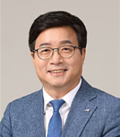
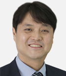
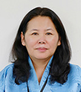
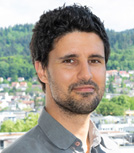
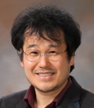

인간도시수원포럼
개회 세션 : 개회식 및 기조강연 2021년 10월 5일 (화) 14:00∼14:50
배경 및 목적
- 수원시는 인간도시를 정책 추진의 중심 가치로 두고, 2016년부터 아시아를 중심으로 도시계획, 포용, 문화, 청년, 주거 등 인간도시 정책 교류의 장을 마련하고, 지속가능한 인간도시가 정착할 수 있도록 선도해 왔음.
- 이번 포럼에서는 제4차 아·태환경장관포럼의 주제와 연계하여 인간도시 실현을 위한 주요 과제 중 하나인 ‘자연’에 주목하여 논의를 전개함
기대성과
- 유엔 지속가능발전목표는 지구의 지속가능성을 위한 지구적 합의이며, 궁극적으로 인간다운 삶을 위한 사람 중심의 가치를 실현하는 인간도시와 일맥상통함을 이해할 수 있음. 아울러 그 중심에 ‘자연’과 ‘인간’의 공존이 핵심 과제임을 이해할 수 있음.
- 본 포럼의 목적이 도시 현장에서 실현되는데 참가자의 역할이 무엇인지를 성찰할 수 있는 기회를 제공함
핵심 질문
- 기후변화, 바이러스 등 급속도로 변화되는 환경 위기의 시대, 인간다운 삶을 위한 도시는 어떠해야 하는가?
- 인간다운 삶을 위한 자연의 가치, 탄소중립을 위한 정책 도구로서의 자연기반해법의 의미, 궁극적으로 지속가능발전목표 달성을 위한 지방정부의 역할과 책임은 무엇인가?
시간 계획
| 시간 | 내용 |
|---|---|
|
14:00~14:50 (50') |
[개회 세션] 인간과 자연, 모두를 위한 도전
|
|
참석자 소개
-

염 태 영 수원시장
염태영 수원시장은 민선5, 6, 7기 수원시장으로 전국시장군수구청장협의회 대표시장(2019. 7. 1~2020. 9.), 대통령직속 국가균형발전위원 (2019.7.1.~2020.9.), 역임하고, 현재 전국시장군수구청장협의회 산하 복지대타협특별위원회 위원장(2019.7.4.~현재) 및 이클레이 한국집행위원회 의장(2021.2-현재)을 맡고 있다.
-

조 석 환 수원시의회 의장
조석환 의장은 제10대 수원시의회 도시환경위원회 부위원장, 제10대 수원시의회 광역화추진특위 특정시추진 소위원장 등을 역임하고, 현재 전국 특례시 의장협의회 회장을 맡고 있다.
-

Dechen Tsering UNEP 아태사무소장
Dechen Tsering은 아시아 태평양 지역 유엔환경계획(UNEP)사무소장으로 UENP 아시아 태평양 사무소는 정부, 지방정부 및 민간 부문과 협력하여 자연자원의 효율적 사용을 장려하고 인간과 환경의 위험을 줄이는 안전한 정책과 전략을 개발 및 시행하고자 노력하고 있다.
-
한 정 애 환경부장관
한정애 환경부장관은 19대~21대 국회의원으로 국회기후변화포럼 공동대표를 역임하고, 2021년 1월부터 대한민국 환경부 장관으로 우리나라 환경 정책을 이끌어가고 있다.
-
황 명 선 논산시장
황명선 논산시장은 제37대, 제38대, 제39대 시장으로 전국시장군수구청장협의회 대표회장, 대통령소속 자치분권위원회 위원, 대통령직속 국가균형발전위원회 위원, 더불어민주당 참좋은지방정부위원회 공동위원장을 맡고 있다.
-

Philipp LaHaela Walter 이클레이 유럽사무소 생물다양성 및 그린인프라 수석담당관
LaHaela Walter 생물다양성 및 그린인프라 수석담당관은 자연 기반 솔루션과 생물 다양성을 촉진하는 국제 옹호 활동에 집중하며 EU가 자금을 지원하는 여러 자연 기반 솔루션 프로젝트에 참여하고 있다.
-

김 법 정 환경부 기후탄소정책실장
김법정 기후탄소정책실장은 환경부 생활환경과, 기후대기정책과, 대기환경정책과, 국가기후환경회의 사무처장 등을 거쳐 현재는 환경부 기후탄소정책실장을 맡고 있다.